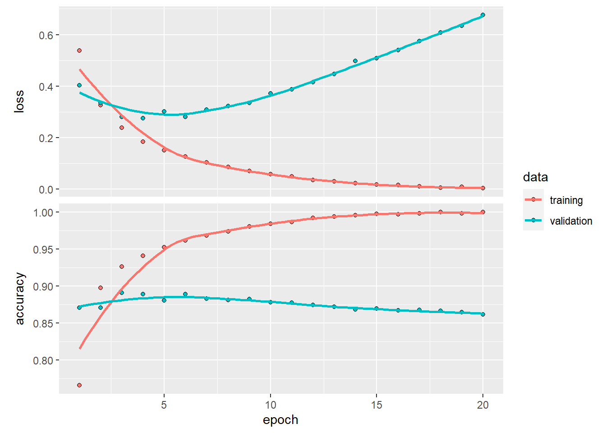

Chapter 20 Deep Learning
Reference: Deep Learning with R by Francois Chollet with J.J. Allaire
https://tensorflow.rstudio.com/tutorials/beginners/
Ch10 in An introduction to Statistical Leraning with applications in R by James, Witten, Hastie and Tibshirani.
20.1 Introduction
In the past few years, artificial intelligence (AI), machine learning, deep learning have been subjects of intense media hype.
One may define AI as the study to automate intellectual tasks normally performed by humans. AI encompasses machine learning but also includes other approaches that don’t involve any learning. For example, early chess programs only involved hardcoded rules crafted by programmers. For a fairly long time, many experts believed that human-level AI could be achieved by having programmers handcraft a sufficiently large set of explicit rules for manipulating knowledge. This approach is known as symbolic AI.
It turns out it is intractable to figure out explicit rules for solving more complex problems, such as image classification, speech recognition, and language translation. A new appraoch is to use machine learning.
You have already studied various machine learning methods and how to apply them with R: \(k\)-NN, linear regression, logistic regression, \(k\)-means clustering, hierarchical clustering, ridge regression, LASSO, decision trees, random forest. These approaches are also examples of shallow learning.
What is deep learning?
Deep learning is a subset of machine learning
The deep in deep learning refers to the idea of successive layers of representations.
These layered representations are learned via neural networks.
Deep learning took off after 2012. Three factors drive the advances in machine learning
- Hardware (CPU, GPU, TPU)
- Datasets and benchmarks (the rise of internet allows people to collect many data, competitions (e.g. Kaggle) allow people to have benchmarks that researchers compete to beat)
- Algorithmic advances
The cornerstone of deep learning is neural network.
20.2 Single Layer Neural Netowrks
A neural network takes an input vector of \(p\) variables \(X = (X_1,\ldots,X_p)\) and builds a nonlinear function \(f(x)\) to predict the repsonse \(Y\).
- Input layer: consists of the \(p\) variables
- Hidden layer: consists of \(K\) hidden units (the picture shows \(5\) but we can have many more)
Activations \(A_k\), \(k=1,\ldots,K\) are computed as functions of the input features \[\begin{equation*} A_k = h_k(X) = g(w_{k0} + \sum^p_{j=1} w_{kj}X_j), \end{equation*}\] where \(g\) is a nonlinear activation function that is specified in advance. For example, it is common to use ReLU (rectified linear unit), which takes the form \[\begin{equation*} g(z) = z I(z \geq 0). \end{equation*}\] With nonlinear activation functions, it is possible for the model to capture complex nonlinearities and interaction effects (e.g. \(X_1 X_2\)).
We can think of each \(A_k\) as a different transformation \(h_k(X)\) of the original features.
For regression problem, the output is \[\begin{equation*} f(X) = \beta_0 + \sum^K_{k=1} \beta_k A_k. \end{equation*}\]
Parameters in the model: \(\beta_0,\ldots,\beta_K, w_{10},\ldots,w_{Kp}\).
To estimate these parameters, the squared-error loss is typically used. That is, we wish to find parameters to minimize \[\begin{equation*} \sum^n_{i=1} (y_i - f(x_i))^2. \end{equation*}\]
The name neural network originally derived from thinking of the model as analogous to neurons in the brain. But there is no need to think in that way.
20.3 Multilayer Neurla Networks
Modern neural networks typically have more than one hidden layer, and many units per layer.
In general, you can have more than one output variable. In particular, if you have a classification problem at hand with \(M\) classes. You will need \(M\) output variables.
An example of a neural network with two hidden layers:
The activations in the first hidden layer: \[\begin{equation*} A^{(1)}_k = g(w^{(1)}_{k0} + \sum^p_{j=1} w^{(1)}_{kj} X_j) \end{equation*}\] for \(k=1,\ldots,K_1\).
The activations in the second hidden layer treats the activations \(A^{(1)}_k\) of the first hidden layer as inputs and computes new activations:
\[\begin{equation*} A^{(2)}_k = g(w^{(2)}_{k0} + \sum^{K_1}_{k=1} w^{(2)}_{kj} A_k^{(1)}) \end{equation*}\]
The name neural network originally derived from thinking of the model as analogous to neurons in the brain. But there is no need to think in that way.
20.4 Keras
Keras is a deep-learning framework that provides a convenient way to define and train deep-learning models.
- allow the code to run on CPU or GPU
almost every recent deep-learning competition has been won using Keras models
One of the backend implementations in Keras is TensorFlow, which is one of the primary platforms for deep learning today.
Installation:
For serious deep learning users, need to train deep learning using GPUs.
20.5 Two-class classification (binary classification)
The IMDB dataset
We’ll be working with “IMDB dataset”, a set of 50,000 highly-polarized reviews from the Internet Movie Database. They are split into 25,000 reviews for training and 25,000 reviews for testing, each set consisting in 50% negative and 50% positive reviews.
the IMDB dataset comes packaged with Keras. It has already been preprocessed: the reviews (sequences of words) have been turned into sequences of integers, where each integer stands for a specific word in a dictionary.
The following code will load the dataset (when you run it for the first time, about 80MB of data will be downloaded to your machine):
library(keras)
imdb <- dataset_imdb(num_words = 10000)
c(c(train_data, train_labels), c(test_data, test_labels)) %<-% imdbThe argument num_words = 10000 means that we will only keep the top 10,000 most frequently occurring words in the training data. Rare words will be discarded. This allows us to work with vector data of manageable size.
The variables train_data and test_data are lists of reviews, each review being a list of word indices (encoding a sequence of words). train_labels and test_labels are lists of 0s and 1s, where 0 stands for “negative” and 1 stands for “positive”:
Layers
Input data
Loss function
20.6 Binary Classification
The goal is to classify movie reviews as positive or negative.
library(keras)
imdb <- dataset_imdb(num_words = 10000)
train_data <- imdb$train$x
train_labels <- imdb$train$y
test_data <- imdb$test$x
test_labels <- imdb$test$yThe argument num_words = 10000 means that we will only keep the top \(10,000\) most frequently occurring words in the training data. Rare words will be discarded. This allows us to work with vector data of manageable size.
The variables train_data and test_data are lists of reviews, each review being a vector of word indices (encoding a sequence of words).
For example,
The idea is to use an integer to represent a word. For example, 14 corresponds to this, 22 corresponds to film, 16 corresponds to was, etc.
train_labels and test_labels are vectors of \(0\)s and \(1\)s, where \(0\) stands for “negative” and \(1\) stands for “positive”:
Encoding the data
As a basic illustration, we will not make use of the order of the words (the order of the words in a text can be meaningful). Each review now is a vector of integers. Since we do not make use of the order of the words, we only need to record which words appear for each review. We assign each appeared word by \(1\).
For example, suppose you have two reviews and there are only \(5\) possible words. Suppose that the first review is c(1, 5, 3) and the second review is c(2, 5, 4). Then we want to encode the two reviews into a binary matrix
# the data
reviews <- list()
# e.g. 1 = not, 2 = is, 3 = good, 4 = bad, 5 = very
reviews[[1]] <- c(1, 5, 3)
reviews[[2]] <- c(2, 5, 4)
vectorize_sequences(reviews, dimension = 5)
## [,1] [,2] [,3] [,4] [,5]
## [1,] 1 0 1 0 1
## [2,] 0 1 0 1 1The function vecctorize_sequences can be written as:
vectorize_sequences <- function(sequences, dimension = 10000) {
results <- matrix(0, nrow = length(sequences), ncol = dimension)
for (i in 1:length(sequences)) {
results[i, sequences[[i]]] <- 1
}
return(results)
}# Our vectorized training data
x_train <- vectorize_sequences(train_data)
# Our vectorized test data
x_test <- vectorize_sequences(test_data)
y_train <- train_labels
y_test <- test_labels
y_train <- as.numeric(train_labels)
y_test <- as.numeric(test_labels)Define your model:
model <- keras_model_sequential() %>%
layer_dense(units = 16, activation = "relu", input_shape = c(10000)) %>%
layer_dense(units = 16, activation = "relu") %>%
layer_dense(units = 1, activation = "sigmoid")model
## Model: "sequential"
## ________________________________________________________________________________
## Layer (type) Output Shape Param #
## ================================================================================
## dense_2 (Dense) (None, 16) 160016
##
## dense_1 (Dense) (None, 16) 272
##
## dense (Dense) (None, 1) 17
##
## ================================================================================
## Total params: 160,305
## Trainable params: 160,305
## Non-trainable params: 0
## ________________________________________________________________________________There are \(160,305\) parameters in the model!
Compile the model.
Setting aside a validation set
set.seed(1)
index <- sample(nrow(x_train), 10000)
x_val <- x_train[index,]
partial_x_train <- x_train[-index,]
y_val <- y_train[index]
partial_y_train <- y_train[-index]Train the model
history <- model %>% fit(
partial_x_train,
partial_y_train,
epochs = 20,
batch_size = 512,
validation_data = list(x_val, y_val)
)Epoch: 1 epoch =

3-layer network
str(history)
## List of 2
## $ params :List of 3
## ..$ verbose: int 1
## ..$ epochs : int 20
## ..$ steps : int 30
## $ metrics:List of 4
## ..$ loss : num [1:20] 0.538 0.326 0.238 0.185 0.151 ...
## ..$ accuracy : num [1:20] 0.766 0.898 0.926 0.941 0.953 ...
## ..$ val_loss : num [1:20] 0.404 0.335 0.28 0.276 0.302 ...
## ..$ val_accuracy: num [1:20] 0.871 0.871 0.891 0.889 0.88 ...
## - attr(*, "class")= chr "keras_training_history"
plot(history)
Since the validation error starts to increase at \(5\) epoch, we shall only train our model with \(4\) epoch.
model <- keras_model_sequential() %>%
layer_dense(units = 16, activation = "relu", input_shape = c(10000)) %>%
layer_dense(units = 16, activation = "relu") %>%
layer_dense(units = 1, activation = "sigmoid")
model %>% compile(
optimizer = "rmsprop",
loss = "binary_crossentropy",
metrics = c("accuracy")
)
model %>% fit(x_train, y_train, epochs = 4, batch_size = 512)Prediction Accuracy in test data
Predicted probability of “positive” for the first \(10\) test data
20.9 Appendix
To decode the text in imdb:
You can decode the data using the following code:
# word_index is a dictionary mapping words to an integer index
word_index <- dataset_imdb_word_index()
# We reverse it, mapping integer indices to words
reverse_word_index <- names(word_index)
names(reverse_word_index) <- word_index
# We decode the review; note that our indices were offset by 3
# because 0, 1 and 2 are reserved indices for "padding", "start of sequence", and "unknown".
decoded_review <- sapply(train_data[[1]], function(index) {
word <- if (index >= 3) reverse_word_index[[as.character(index - 3)]]
if (!is.null(word)) word else "?"
})
cat(decoded_review)
## ? this film was just brilliant casting location scenery story direction everyone's really suited the part they played and you could just imagine being there robert ? is an amazing actor and now the same being director ? father came from the same scottish island as myself so i loved the fact there was a real connection with this film the witty remarks throughout the film were great it was just brilliant so much that i bought the film as soon as it was released for ? and would recommend it to everyone to watch and the fly fishing was amazing really cried at the end it was so sad and you know what they say if you cry at a film it must have been good and this definitely was also ? to the two little boy's that played the ? of norman and paul they were just brilliant children are often left out of the ? list i think because the stars that play them all grown up are such a big profile for the whole film but these children are amazing and should be praised for what they have done don't you think the whole story was so lovely because it was true and was someone's life after all that was shared with us all